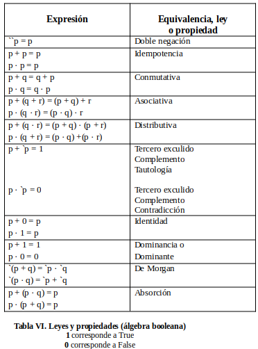
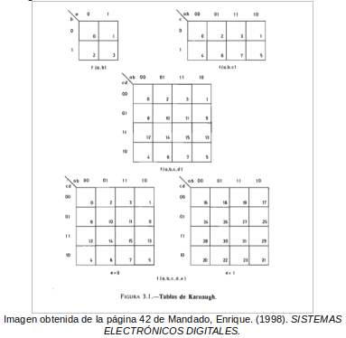

Solemos llamarles sistemas algebraicos a las estructuras matemáticas que consisten en un conjunto de elementos unidos a una o más operaciones definidas. Estas operaciones son las principales que encontramos en la aritmética, como la suma y multiplicación, hasta operaciones más abstractas.
Sin embargo, usualmente se manejan datos de los tipos que representan cantidades; los números reales (π4, e/2, √(2)+1, e, π, entre otros) en donde encontramos aún más tipos, como: los números racionales, enteros, naturales y por otro lado tenemos a los números imaginarios y luego los complejos. Mismos que van a ser representados de otra manejar, en caso de desconocerlos. Por lo tanto, habrá que definir a los sistemas algebraicos como:
Los conjuntos de una o más ecuaciones que posean más de una incógnita y que conforman un problema matemático; para el cual nos compete encontrar los valores que van a tomar las incógnitas que satisfacen las operaciones que forman parte de las ecuaciones ya mencionadas; a esto nos referimos a que también se debe cumplir la igualdad del sistema en cuestión.
Dentro de los sistemas algebraicos, encontramos ciertas representaciones de elementos en las operaciones que conforman las ecuaciones, como letras del alfabeto latino (las últimas, como: u, v, w, x, y, z) o si son demasiadas representaciones usando una misma letra, se suelen utilizar los subíndices.
Bien, conocemos lo que son los sistemas algebraicos y la definición anterior es suficiente para lo que necesitamos, pero repasemos en forma de mención a las propiedades que regulan lo que se puede o no hacer con los sistemas.
PROPIEDADES
Como podemos observar, las propiedades de los sistemas algebraicos son casi los mismos que se aplican para el algebra booleana que mencionamos en la introducción. Algebra que en vez de manejar una cantidad desorbitante de números, solo va a trabajar con dos, basados en el trabajo de George Boole (1815 - 1864).
El álgebra booleana, o también conocida como álgebra de Boole, es un sistema algebraico basado en la lógica proposicional, utilizado para representar circuitos lógicos en forma de ecuaciones. Apoyándose a su vez, de la lógica binaria y la teoría de conjuntos. Fue desarrollada por el matemático y lógico británico George Boole durante el siglo XIX.
Como ya se mencionó, en este sistema algebraico de base binaria, nos indica que se van a manipular valores binarios, esto nos dice que son valores que pueden ser verdaderos (1) o falsos (0). Y al ser un sistema algebraico, se van a estipular ciertos reglamentos para su adecuado y lógico uso, utilizando operaciones como conjunción (AND), disyunción (OR) y la negación (NOT). Nos permite evaluar condiciones, tomar decisiones y controlar el flujo de ejecución de programas que queramos poner en marcha.
DEL ÁLGEBRA DE BOOLE:
NOS PERMITE:
Y proporciona un marco matemático adecuado para el estudio de la lógica y el razonamiento lógico; asunto vital para la computación moderna.
Para la operación disyuntiva (OR) nos dice que el orden que ocupen las variables es indiferente. Lo representamos con como: ∨
Para la operación conjuntiva (AND) el orden que ocupen las variables es indiferente, Lo representamos como: ∧
Para la operación disyuntiva (OR), en su resultado al tener un caso en que intervienen más de dos variables, va a ser independiente del modo en que se agrupen las variables.
Ahora estamos teniendo un enfoque centrado a la búsqueda de representaciones algebraicas de lógica para representar desde circuitos hasta estructuras condicionales que por ende nos deja en un entorno de lógica con razón de dos respuestas en las que encontramos a verdadero (1) y falso (0). Por lo que encontraremos sistemas algebraicos en los que tendremos expresiones extensas y que complicarían la comprensión de sí mismas para uno. Por lo tanto, nos quedamos en la necesidad de recurrir a métodos que logren reducir las expresiones en álgebra de Boole, que ahora; por comodidad, vamos a llamar funciones booleanas.
Para nuestro curso hemos visto distintas formas de reducir una función booleana, siendo estas las más destacadas de las que se encuentran en el entorno computacional, en el área de lógica se refiere, las cuales serían reducciones por:
Para este método es a primera instancia, fácil de interpretar por su semejanza con los sistemas algebraicos a los que estamos acostumbrados. Sin embargo, aquí iremos aplicando los postulados (o propiedades) del algebra de Boole.
Bueno, las propiedades que se estuvieron manejando durante el curso para la aplicación de este método se encuentran en la tabla VI que adjuntamos a continuación, en donde estamos manejando las representaciones de la conjunción, disyunción y negación en su forma ( · , + y ‘, respectivamente).
Este método surge de tratar de agrupar a los términos de interés sin aplicar de forma directa el desarrollo algebraico que ofrece el método anterior. Y esto se constituye de desarrollar de forma gráfica la tabla de verdad de una función lógica.
Como podemos ver, se pueden tratar funciones de dos hasta cinco variables, para este método tabular cuyos términos canónicos adyacentes pueden ser agrupados para hacer de forma más sencilla la agrupación de los elementos.
Su algoritmo, en pocas palabras, consiste en:
Este método fue presentado originalmente por Willard Van Orman Quine y Edward J. McCluskey, denominado en su momento como método (Q-M), no limitado al número de variables de una función (como si lo pudiera llegar a ser para los mapas de Karnaugh), posibilita la implementación algorítmica y tiene la ventaja de realizar simplificaciones simultáneas para varias funciones que comparten un mismo conjunto de variables de entrada.
Este método entrega una solución minimizada global de la implementación, en vez de una solución mínima por función (los llamados mínimos locales).
A continuación, incluiremos ejemplos con explicación escrita paso a paso para un mejor entendimiento de la implementación de este método de minimización, con base en la forma vista en clase; tratando de abordar todos los casos posibles en funciones de cuatro a cinco variables.